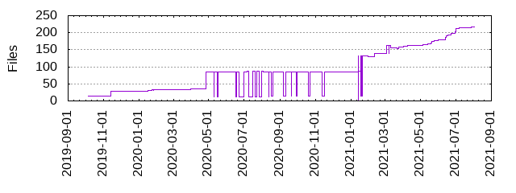

Files
- Total files
- 217
- Total lines
- 37805
- Average file size
- 17216.42 bytes

| Extension | Files (%) | Lines (%) | Lines/file |
|---|
| 8 (3.69%) | 953 (2.52%) | 119 |
| conf | 1 (0.46%) | 1 (0.00%) | 1 |
| css | 3 (1.38%) | 234 (0.62%) | 78 |
| enc | 2 (0.92%) | 16 (0.04%) | 8 |
| html | 3 (1.38%) | 361 (0.95%) | 120 |
| in | 1 (0.46%) | 8 (0.02%) | 8 |
| ini | 2 (0.92%) | 66 (0.17%) | 33 |
| ipynb | 11 (5.07%) | 12359 (32.69%) | 1123 |
| jinja | 1 (0.46%) | 9 (0.02%) | 9 |
| lp | 6 (2.76%) | 93 (0.25%) | 15 |
| md | 7 (3.23%) | 546 (1.44%) | 78 |
| png | 11 (5.07%) | 5646 (14.93%) | 513 |
| py | 115 (53.00%) | 21842 (57.78%) | 189 |
| rst | 14 (6.45%) | 311 (0.82%) | 22 |
| sh | 2 (0.92%) | 118 (0.31%) | 59 |
| toml | 1 (0.46%) | 3 (0.01%) | 3 |
| txt | 5 (2.30%) | 235 (0.62%) | 47 |
| yaml | 16 (7.37%) | 141 (0.37%) | 8 |
| yml | 8 (3.69%) | 513 (1.36%) | 64 |